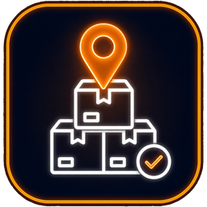
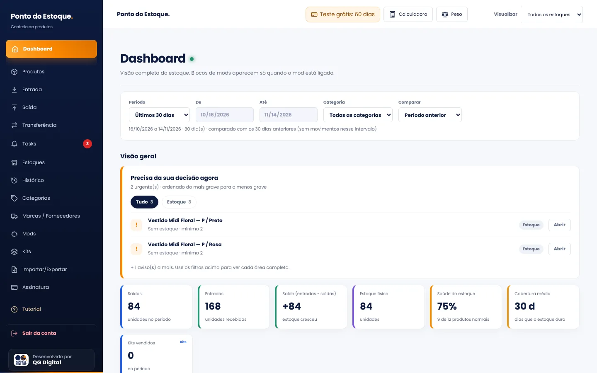
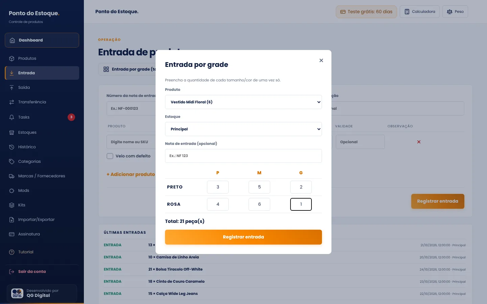
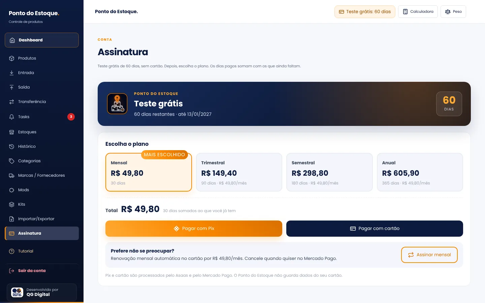

Novo · 60 dias grátisPonto do Estoque
O controle de estoque que cabe no seu dia a dia. Cadastre os produtos, registre o que chegou e o que saiu e saiba na hora o que está acabando, no computador ou no celular.

Do cadastro ao estoque organizado, em 4 passos
Feito para quem não tem tempo de aprender sistema complicado. Um tutorial guia você na primeira vez e o painel cresce conforme você usa.
Crie sua conta
Só e-mail e senha. Você já ganha um estoque "Principal" pronto e 60 dias para usar à vontade, sem cartão.
Cadastre os produtos
Só o nome é obrigatório: o código é criado sozinho. Roupa com tamanho e cor? Cadastre a grade inteira de uma vez.
Registre entradas e saídas
Chegou mercadoria, vendeu, mudou de lugar: um lançamento e o saldo se ajusta. Peça com defeito fica separada até você resolver.
Acompanhe no painel
Veja o que entrou, o que saiu e o que está acabando. Os avisos aparecem em Tasks antes de faltar produto.
O básico bem feito e os extras quando precisar
O Ponto do Estoque já vem com produtos, entradas, saídas, transferências e avisos. O resto você liga como um mod, igual mod de jogo: só aparece se fizer sentido para o seu negócio.
- Tamanhos e cores (grade)
- Vários estoques (loja, depósito)
- Kits com baixa automática
- Controle de validade por lote
- Pedidos de fornecedor
- Terceirização com conferência
- Mercado Livre e Shopee
- API REST para integrar


60 dias grátis, depois o plano que couber
Teste com calma, com os seus produtos de verdade. Quando gostar, escolha o plano mensal, trimestral, semestral ou anual e pague no Pix ou no cartão. Os dias pagos somam com os que ainda faltam.
- Sem cartão para começar e sem fidelidade
- Seus dados continuam disponíveis para ver e exportar, mesmo se a assinatura vencer
- Funciona no celular: dê baixa no estoque de onde estiver